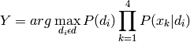
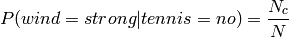

05 - Bayesian Learning¶
Discrete Random Variables¶
If  is a boolean valued random variable denoting an event, and there is some degree of uncertainty as to whether occurs.
is a boolean valued random variable denoting an event, and there is some degree of uncertainty as to whether occurs.
For example could be:
- The US president in 2023 will be Male
- You wake up tomorrow with a headache
- You have Ebola
Probabilities¶
We write as “the fraction of possible worlds in which is true”.
Axioms of Probability Theory¶
All probabilities lie between 0 and 1

A true proposition has probability 1, and a false proposition has probability 0

# THe probability of disjunction is:
Theorems from the Axioms¶

Conditional Probability¶
The probability is the fraction of worlds in which  is true that also have A as true.
is true that also have A as true.
For example:
*  is “Having a headache”
*
is “Having a headache”
*  is “Coming down with Flu”
is “Coming down with Flu”
If:
Remember that  means “what is the probability of if is true”.
means “what is the probability of if is true”.


Probabilistic Inference¶
It is not good reasoning to say that “I have woken up with a headache, thus there is a 50% chance I have of coming down with the flu since 50% of flus lead to a headache”.

However:
Bayes Rule¶
Bayes, Thomas (1763) AN essay towards solving a problem in the doctrine of chances. Philosophical Transactions of the Royal Society of London.
So Bayes Rule is:

Bayesian Learning¶
So we can use this rule in a machine learning context by first renaming the variable more appropriately:

where  is the data and is the hypothesis.
is the data and is the hypothesis.
 is the probability of hypothesis before seeing any data.
is the probability of hypothesis before seeing any data.- is the probability of the data if the hypothesis is true.
- is the probability of hypothesis after having see the data .
...
An Illustrating Example¶
A patient takes a lab test and the result comes back positive. It is known that the test returns a correct positive result in only 98% of cases and a correct negative result in only 97% of cases. Furthermore, only 0.008% of the entire population has this disease.
- What is the probability that this patient has cancer?
- What is the probability that he does not have cancer?
- What is the diagnosis?
The available data has two possible outcomes, either positive represented by a symbol and negative represented by a symbol.
The various probabilities are:
Now we have a new patient, whose test result is positive. Should we diagnose the patient as having cancer or not?
Choosing Hypotheses¶
Generally, we want the most probable hypothesis given the observed data. There are some terms people use in order to describe this process:
MAP Hypothesis - Maximum A Posteriori Hypothesis
ML Hypothesis - Maximum Likelihood Hypothesis
Maximum a Posteriori (MAP)¶
First remember we can use the Bayesian equation:

So we know this much:

Then we can replace the right hand side using the Bayesian equation:
Then we can drop the denominator since is independent of , giving:
Maximum Likelihood (ML)¶
Assuming that each hypothesis in H (the hypothesis space) is equally probable (i.e. ), then for all  and
and  , we can drop in MAP. is often called the likelihood of data
, we can drop in MAP. is often called the likelihood of data  given . Any hypothesis that maximises is called the maximum likelihood hypothesis:
given . Any hypothesis that maximises is called the maximum likelihood hypothesis:

Does the Patient Have Cancer or Not?¶
So now, how do we diagnose the patient:
So the probability of not having cancer is the higher, so the diagnosis is not cancer.
Bayesian Classifier¶
For the following, we will be using this table of data:
The Bayesian approach to classifying new instances of  is to assign the class with the most probable target value
is to assign the class with the most probable target value  (using a MAP classifier).
(using a MAP classifier).
This means use the maximum probability of each of the classes given we know the input vector . So as before we use the Bayesian formula to substitute different values:
And then we can drop the denominator as before:
Luckily is easy to calculate by simply counting how many times each target value occurs in the training set.
Therefor we get the following probabilities for values of :
The harder part is calculating . From the data we can see there are 5 columns (excluding the day column) the first and second with 3 values and the result with 2 values. Thus there are possible combinations.
To obtain a reliable estimate of the probability here, we would need to see each combination many times. However we don’t even see each combination 1 time as we have less than 72 observed instances.
Hence we need a very, very large training set, which in most cases is impossible to obtain.
Naïve Bayes Classifier¶
The Naïve Bayes classifier is based upon the simplifying assumptions that the attribute values are conditionally independent given the target value. The means we get the following:
So the Naïve Bayes Classifier is:

Back to the Example¶
So we can now classify new instances for the table using the Naïve Bayes Classifier.
Estimating Probabilities¶
So far, we can estimate the probabilities using the fraction of times the event is observed to occur over the entire observed opportunities.
In the above example, we estimated:

where is the total number of training samples for which , and is the number of these for which .
When is small, such approaches provide poor estimation. To avoid this difficulty, we can adopt the m-estimate of probability:
where is the prior estimate of the probability we wish to estimate and  is a constant (which you choose) called the equivalent sample size.
is a constant (which you choose) called the equivalent sample size.
A typical method for choosing in the absence of other information is to assume uniform priors: If an attribute has  possible values we set
possible values we set  .
.
For example, , we note wind has two possible values, so the uniform priors means .